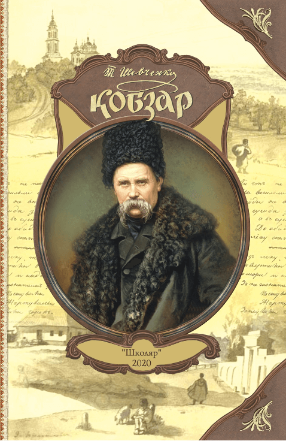
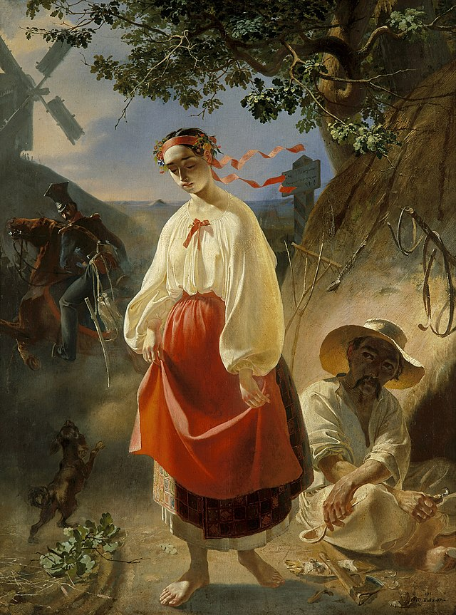
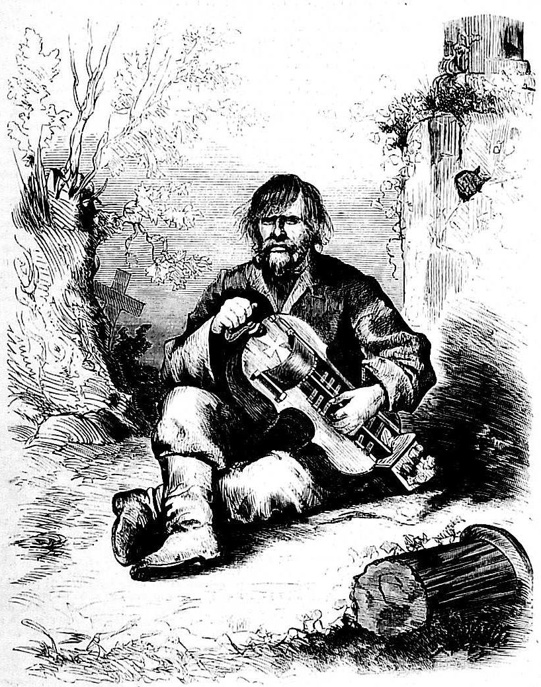
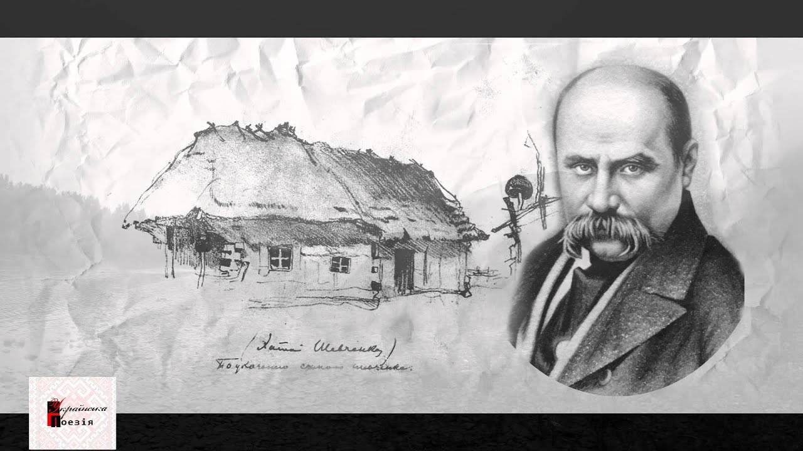
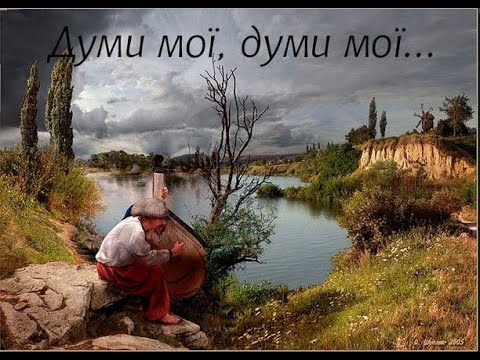

Заповіт
Як умру, то поховайте
Мене на могилі,
Серед степу широкого,
На Вкраїні милій...
Щоб лани широкополі,
І Дніпро, і кручі
Було видно, було чути,
Як реве ревучий...

Катерина
Любітеся, чорнобриві,
Та не з москалями,
Бо москалі — чужі люди,
Роблять лихо з вами...

Перебендя
Я — старий та мандрівний
Сліпий бандурист,
Блукаю по Україні
Як вітровій лист...

Мені однаково
Мені однаково, чи буду
Я жить в Україні, чи ні.
Чи хто згадає, чи забуде
Мене в снігу на чужині...

Думи мої, думи мої
Думи мої, думи мої,
Лихо мені з вами!
Нащо стали на папері
Сумними рядами?